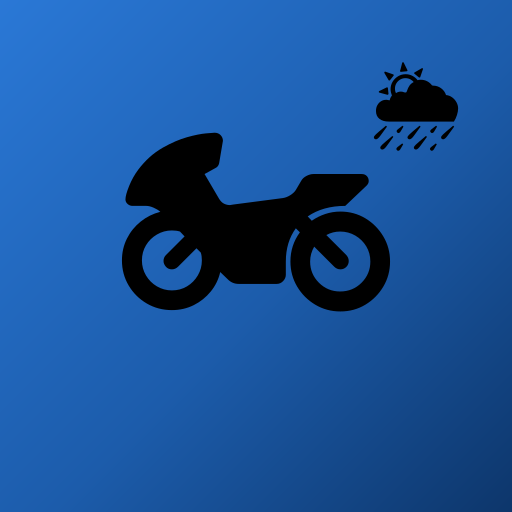

Última actualización: 16 de agosto de 2026
Antes de todo lo demás: esta aplicación te da información para ayudarte a decidir, no instrucciones que seguir a ciegas. La conducción es enteramente responsabilidad tuya. Nunca manipules el teléfono en marcha — usa un soporte y consulta la app parado. Si las condiciones reales son peores que la previsión, manda la realidad, no la app.
Al usar la aplicación Levante aceptas estos términos. Si no estás de acuerdo con ellos, no uses la aplicación.
La aplicación presenta previsiones meteorológicas, itinerarios y avisos destinados a apoyar la decisión de un motociclista sobre si, cuándo y cómo hacer un viaje. Es una herramienta de apoyo a la decisión y de información.
La aplicación no es un instrumento de seguridad, no sustituye tu evaluación de las condiciones reales de la carretera y no constituye asesoramiento profesional de ninguna naturaleza. Las previsiones meteorológicas son, por definición, estimaciones: pueden estar equivocadas, desactualizadas o no disponibles.
Los itinerarios provienen de datos abiertos y pueden no reflejar obras, cortes, sentidos prohibidos o restricciones recientes. Cumple siempre la señalización real de la vía, que prevalece sobre cualquier indicación de la aplicación.
La legislación sobre avisos de dispositivos de control de velocidad difiere de país a país. En algunos países está prohibido y se castiga con multas elevadas y confiscación del equipo.
La aplicación procura respetar esas diferencias automáticamente: desactiva los avisos en los países donde están prohibidos y, donde la ley solo restringe la precisión, presenta zonas de peligro amplias en vez de ubicaciones exactas. Aun así, es tu responsabilidad conocer y cumplir la ley del país por el que circulas. Si activas manualmente una función señalada como restringida, lo haces por tu cuenta y riesgo.
La aplicación depende de servicios externos de meteorología, mapas y rutas, y de conexión a internet para los datos más recientes. No garantizamos disponibilidad continua, ausencia de errores ni exactitud. Las funciones pueden cambiar o descontinuarse.
En la máxima medida permitida por la ley aplicable, la aplicación se proporciona «tal como está», sin garantías de ningún tipo. No somos responsables de ningún daño, pérdida, lesión, retraso, multa o perjuicio derivado del uso — o de la imposibilidad de uso — de la aplicación, ni de decisiones tomadas con base en la información que presenta.
Nada en estos términos excluye o limita responsabilidades que no puedan excluirse legalmente, incluidas las derivadas de dolo o negligencia grave, ni afecta a los derechos que la ley del consumidor te confiere.
Los datos de mapa y de puntos de interés provienen de OpenStreetMap y sus colaboradores, disponibles bajo la licencia ODbL. Las previsiones meteorológicas provienen de Open-Meteo. Los cálculos de itinerario usan OSRM y Geoapify. Estos datos son de origen comunitario o automatizado y pueden contener errores o lagunas.
No puedes usar la aplicación para fines ilícitos, intentar eludir limitaciones técnicas, sobrecargar deliberadamente los servicios de los que depende, ni redistribuirla presentándola como tuya.
El tratamiento de datos está descrito en la Política de Privacidad, que forma parte integrante de estos términos. En resumen: no recogemos datos personales ni tenemos servidor; de tu dispositivo salen solo las coordenadas consultadas y el texto de las búsquedas, enviados sin identificadores a los servicios listados en la política — y nosotros no guardamos nada.
Estos términos pueden actualizarse. La fecha de actualización de arriba indica la versión vigente. Seguir usando la aplicación tras un cambio significa que aceptas la versión actualizada.
Estos términos se rigen por la ley portuguesa, sin perjuicio de las normas imperativas de protección del consumidor del país donde tengas tu residencia habitual.
Para cualquier cuestión sobre estos términos: info@getlevante.com.